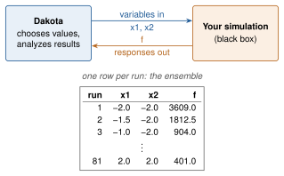

What is Dakota?
Dakota is open-source software from Sandia National Laboratories, released under the GNU Lesser General Public License (LGPL). It enables outer-loop analyses (e.g., optimization, uncertainty quantification (UQ), sensitivity analysis, and calibration) for simulations. Dakota treats your simulation as a black box: it supplies parameter values and gets back results, and it needs no further information about how your code works.
Dakota enables outer-loop analyses
Most questions about a simulation can’t be answered by a single run. Dakota runs outer-loop analyses, generating many runs of a simulation code with different input values. For each run, Dakota chooses the parameter values, manages the run, and collects the simulation outputs, or responses. It then analyzes this ensemble of input–output pairs to extract useful information, such as optimal values or response statistics.

Fig. 2 Dakota sends variable values to your simulation and receives responses. Each run adds a row to the ensemble containing a given input–output pair.
Any code that takes inputs and produces outputs can be interfaced with Dakota: black-box executables with input files, Python scripts, Matlab functions, etc.
Build one interface, use many methods
You connect your simulation to Dakota once through an analysis driver, the program Dakota runs for each evaluation to map from parameter values to responses. Once you have a functioning analysis driver, every Dakota method can use it. Switching from a sensitivity study to an optimization requires only a change to the Dakota study, not to your code.

Fig. 3 One analysis driver connects your simulation to every Dakota method.
Questions Dakota helps answer
Dakota supports four main kinds of studies, which answer different questions:
Sensitivity analysis Which inputs matter most? |
Uncertainty quantification How do uncertain inputs affect my results, and how confident can I be in them? |
Optimization What is the best design? |
Calibration Which parameter values best match my data? |
In addition to these four main kinds of studies, parameter studies and design of experiments explore how your responses change over a range or grid of inputs.
Why use Dakota
Practical for costly simulations. Many methods are designed to reach an answer in as few simulation runs as possible.
Deterministic and probabilistic analysis in one tool. For example, you can optimize a design while accounting for uncertainty in its inputs.
Robust to difficult responses. Derivative-free and global methods handle responses that are noisy, non-smooth or have several local optima.
Surrogate and multifidelity methods. Dakota can replace an expensive simulation with a cheap approximation, or combine models of different cost and accuracy.
Parallel from desktop to supercomputer. Dakota can run many simulations at once, on a laptop or on a large distributed cluster.
Production software. Dakota is tested and maintained, with a new release every May and November.
Beyond the black box
Most users start with an analysis driver that exchanges files with their code, because this form of interfacing works with nearly any code. If your model is written in Python, Dakota can also call it directly and exchange values in memory. This approach avoids file input and output for more rapid model evaluations. This Python direct interface may not be included in pre-built downloads and must be enabled when compiling Dakota from source. You can also embed Dakota in your own C++ or Python application through its library API.
Pedigree
Dakota was created at Sandia National Laboratories in 1994 to give engineers a common set of optimization tools, instead of a new custom interface for every project. It has since grown to include sensitivity analysis, uncertainty quantification, calibration and advanced combined strategies. Dakota is used in fields including defense, climate modeling, materials, nuclear power and renewable energy. Read more in Dakota History and Motivation.